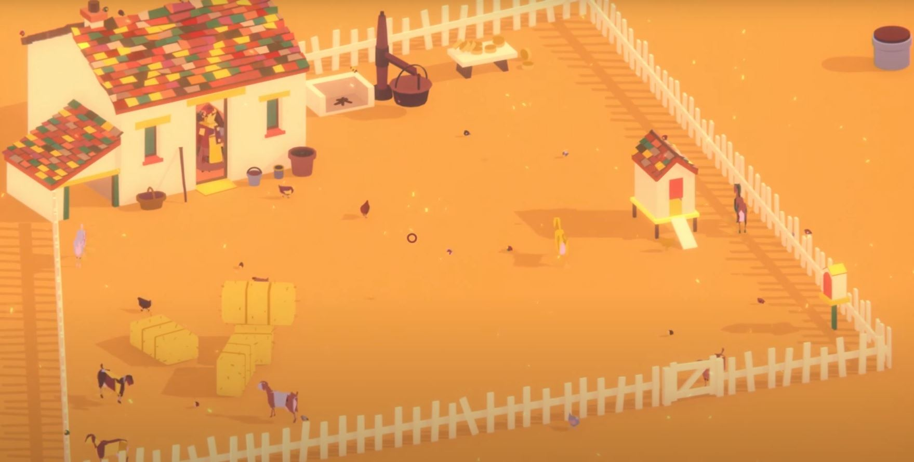
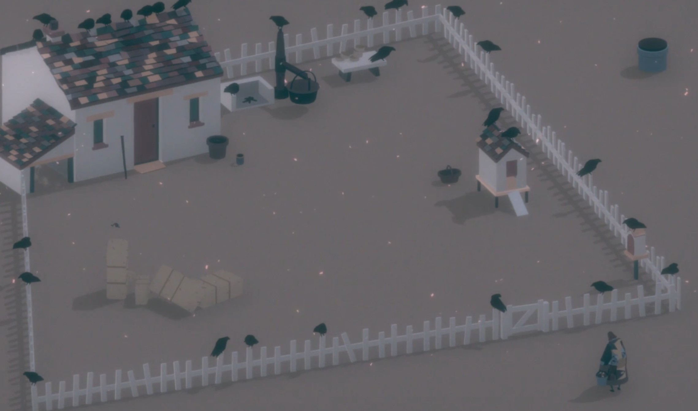

The main character you play as is a woman named Tikvah. You move around
with a simple point and click. You learn about the world through letters you
receive from your Tikvah's brother. The letters are received every day from
a merchant in-game. The letters are the main story telling device in the
game. You learn about the outside world and of the threats that are coming
to the farm.
The graphics of the are fairly simple, but pleasing to the eyes. There is
only one world that you can explore, but over time the farm your on slowly
changes.
The challenges of the game are to live on your farm, collect letters from
the merchant and do want ever you want on the farm. The game has very little
challenges are obstacles, however you have to get the letters each day from
the merchant to progress. The main objective is just to collect the letters
each day until you reach the end.

Music: The music is peacefeul and calm at the start with the birds
chirping. Evenutally the music turns dark and sad as something comes and
slowly destroys the farm. The crows in the image of a sign of death that
takes over the farm. Eventually the music just stops and all life on the
farm is gone.

There are several objects that you can interact with while you play the
game. You can pick up a watering bucket and fill it up at a water well to
grow a plant. a stick that drags around in the sand. A basket. A bucket for
milking the goat and for use in making goat cheese. A chicken coop that you
open and close the doors. A merchant comes by everyday that drops off a
letter from her brother and sells hay and goats. The network on the right
shows what the player can interact with.
In conclusion, I chose to talk about this game because at first it appeared
to be interesting. While I was playing I enjoyed the calm atmosphere and
reading the letters to learn about the world. However, I began to become
bored after realizing the main point of the game was just to read the
letters to progress through the game. After realizing that all the other
things you can interact with and do were just there to spend your time
waiting for the merchant left me discouraged and lost the motivation to keep
playing.